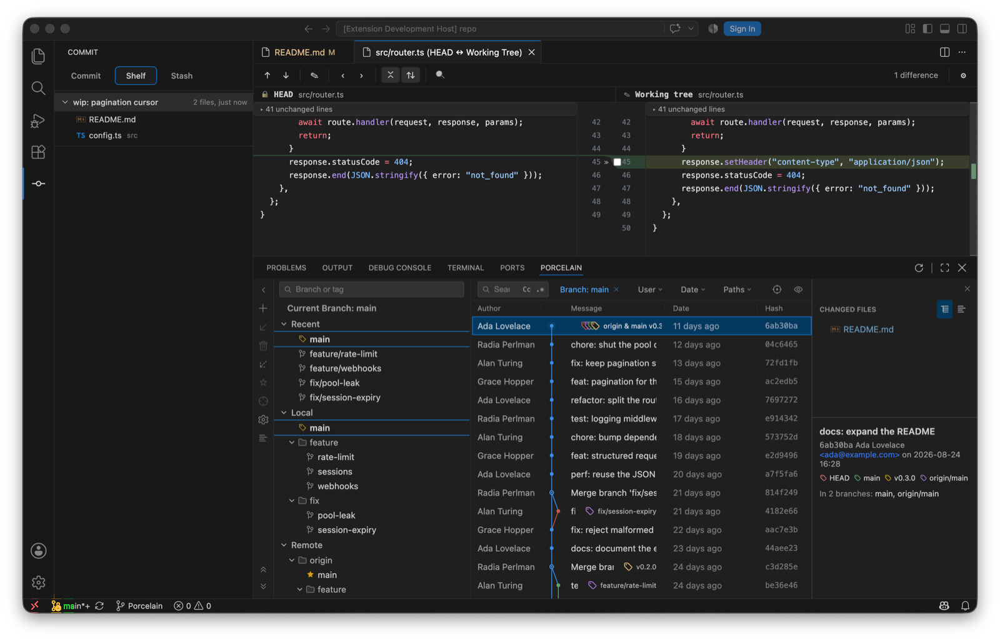

Two tabs beside Commit. Both put changes aside; they differ in where the changes go.
The shelf is IntelliJ's. Each shelved change is a patch under .idea/shelf/<name>/shelved.patch with the matching entry in .idea/shelf/'s XML, so a repository shelved from IntelliJ shows up here and vice versa. Shelves are per working copy, survive branch switches, and aren't part of git's own state.
.idea/shelf/ that IntelliJ wrote is readable, including its description.
Unsafe shelf mutations are refused before the repository changes. The index is protected during the operation, and staged changes that aren't part of the shelf are preserved.
The Stash tab is native git stash.
Smart checkout and Update Project use the stash too, transparently: they stash, do the switch or the update, then restore, and the stash entry is gone afterwards.